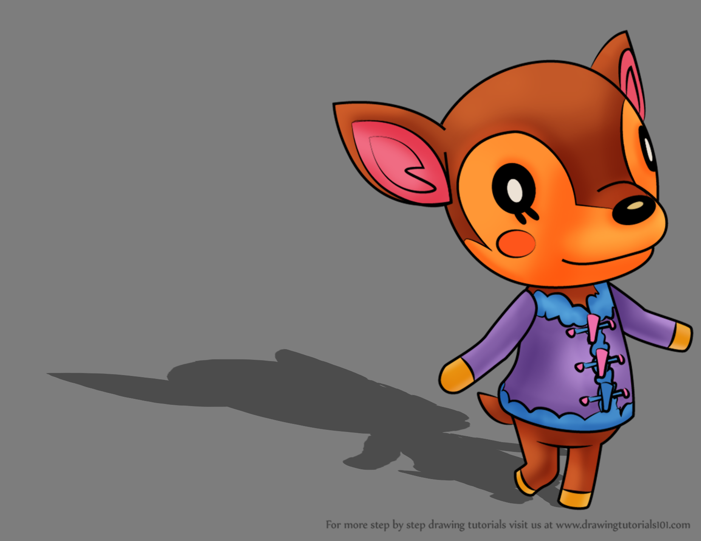
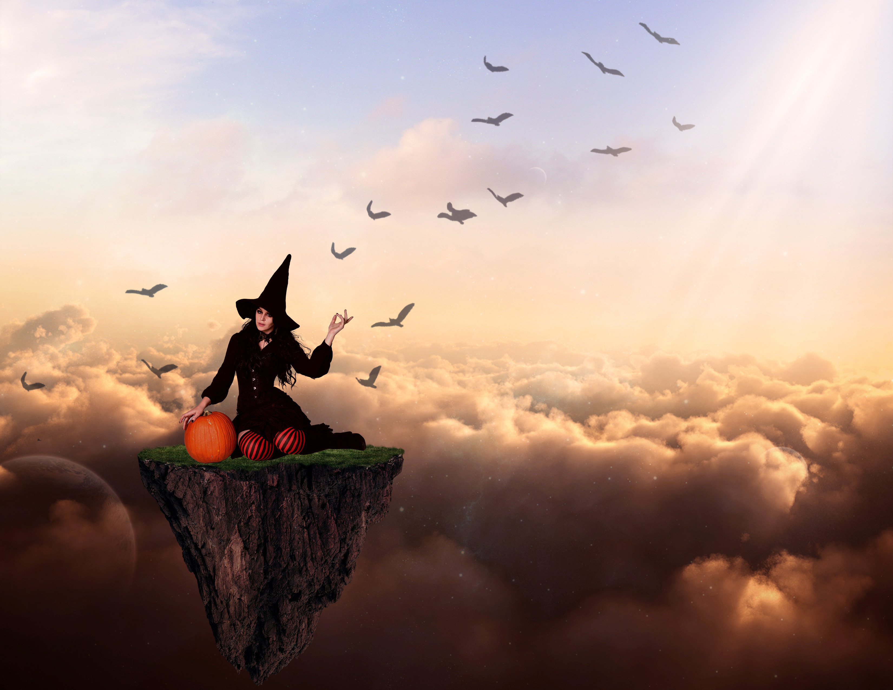

Welcome to my Photoshop Page. Here you'll find various completed projects from my Introduction to Digital Media course. Hope you'll enjoy.
A simple assignment based on using the lasso tool to make the model transparent, or as transparent as someone like me was able to do.

A assignment based on shading and other Photoshop elements that we learned during the course.
The assignment right after the Fawn assignment, this clash of Photoshop techniques was a true challenge for me.

The last major project of my class, which used select professor-approved stock images to create a witch hanging out of a floating piece of land.